Machine Learning Engineer (Ads) Interview Questions
A Guide to Pass the MLE interview.
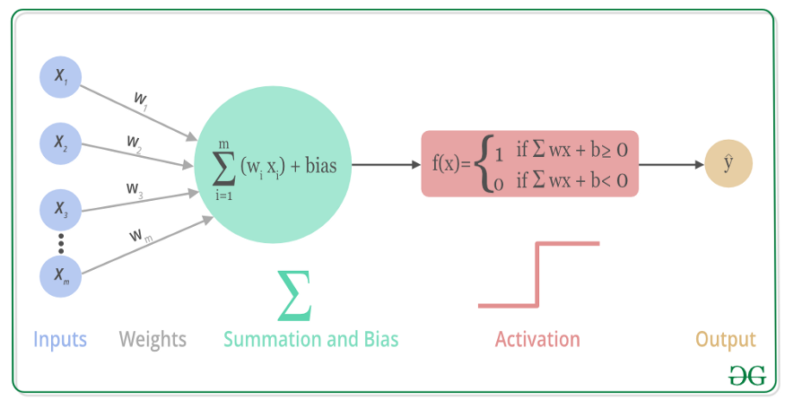
1 什么是激活函数？
激活函数是人工神经网络的一个极其重要的特征。它决定一个神经元是否应该被激活，激活代表神经元接收的信息与给定的信息有关。
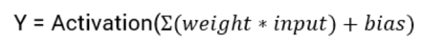
激活函数对输入信息进行非线性变换。 然后将变换后的输出信息作为输入信息传给下一层神经元。
2 可以不用激活函数吗？
当我们不用激活函数时，权重和偏差只会进行线性变换。线性方程很简单，但解决复杂问题的能力有限。没有激活函数的神经网络实质上只是一个线性回归模型。
激活函数对输入进行非线性变换，使其能够学习和执行更复杂的任务。我们希望我们的神经网络能够处理复杂任务，如语言翻译和图像分类等。线性变换永远无法执行这样的任务。
激活函数使反向传播成为可能，因为激活函数的误差梯度可以用来调整权重和偏差。如果没有可微的非线性函数，这就不可能实现。
3 激活函数的类型
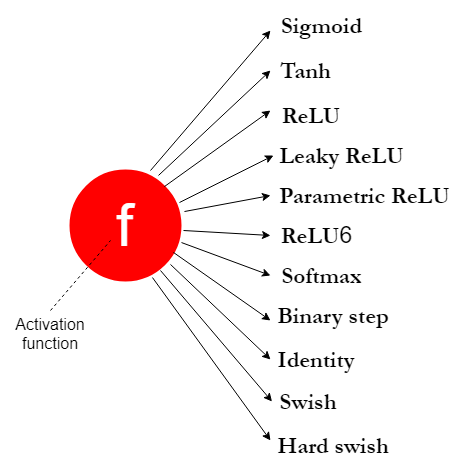
3.1 Sigmoid
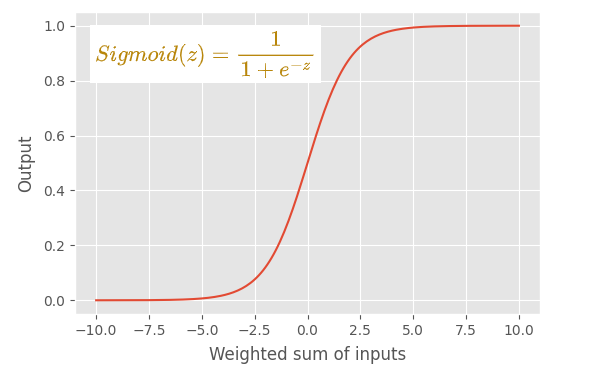
特点
- 逻辑回归模型中使用的逻辑函数。
- sigmoid 函数是一个 s 形图。
- 这是一个非线性函数。
- sigmoid 函数将其输入转换为 0 到 1 之间的概率值。
- 它将大的负值转换为 0，将大的正值转换为 1。
- 对于输入 0，它返回 0.5。所以 0.5 被称为阈值，它可以决定给定的输入属于哪个类。
用法
- Sigmoid 函数仍在 RNN 中使用。
- 通常不将 sigmoid 函数用于隐藏层，因为太慢了，一般使用 ReLU 或 Leaky ReLU。
- 当我们构建二分类器时，输出层使用 sigmoid 函数，输出依据sigmoid出来的概率值解释为某一类。
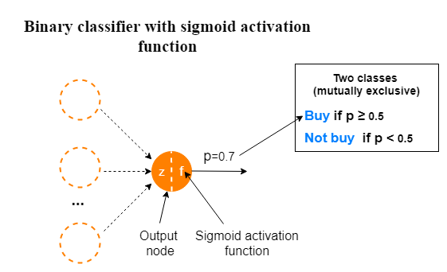
当我们使用 sigmoid 函数建立一个多标签分类模型时，其中每个相互包含的类都有两个结果。不要将此与多类分类模型混淆。
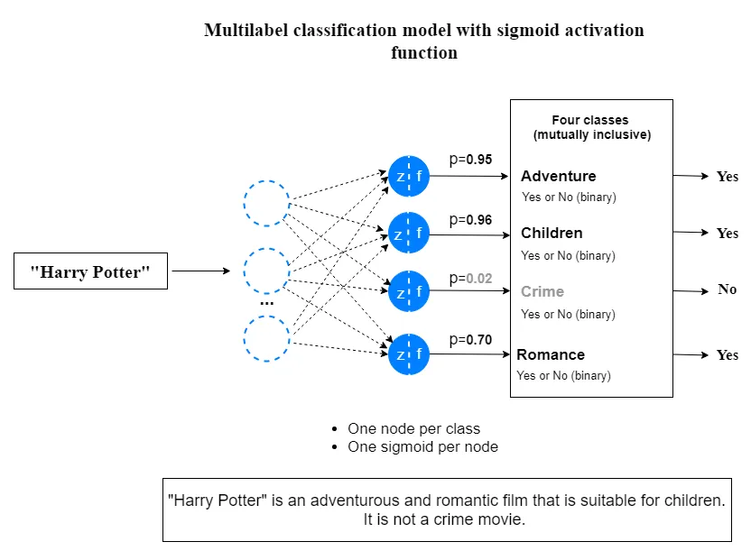
缺点
由于以下缺点，我们通常不在隐藏层中使用 sigmoid 函数。
- sigmoid 函数存在梯度消失问题。这也称为梯度饱和。
- sigmoid 函数收敛慢。
- 它的输出不是以零为中心的。因此，它使优化过程更加困难。
- 由于包含了 e^z 项，因此该函数的计算成本很高。
3.2 tanh
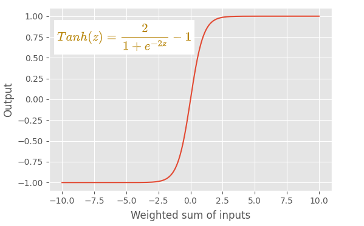
特点
- tanh（正切双曲线）函数的输出始终介于 -1 和 +1 之间。
- 像 sigmoid 函数一样，它有一个 s 形图。这也是一个非线性函数。
- 与 sigmoid 函数相比，使用 tanh 函数的一个优点是 tanh 函数以零为中心。这使得优化过程更加容易。
- tanh 函数的梯度比 sigmoid 函数的梯度更陡。
用法
- 不在隐藏层使用 tanh 函数
- 不在输出层使用 tanh 函数
缺点
由于以下缺点，我们通常不在隐藏层中使用 tanh 函数。
- tanh 函数存在梯度消失问题。
- 由于包含了 e^z 项，因此该函数的计算成本很高。
3.3 ReLU
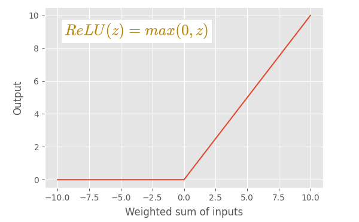
特点
- ReLU（整流线性单元）激活函数是 sigmoid 和 tanh 激活函数的绝佳替代品。
- ReLU 发明是深度学习领域最重要的突破之一。
- 不存在梯度消失问题。
- 计算成本很低。认为 ReLU 的收敛速度比 sigmoid 和 tanh 函数快 6 倍。
- 如果输入值为 0 或大于 0，则 ReLU 函数按原样输出输入。如果输入小于 0，则 ReLU 函数输出值 0。
- ReLU 函数由两个线性分量组成。因此，ReLU 函数是一个分段线性函数。所以ReLU 函数是一个非线性函数。
- ReLU 函数的输出范围可以从 0 到正无穷大。
- 收敛速度比 sigmoid 和 tanh 函数快。这是因为 ReLU 函数对一个线性分量具有固定导数（斜率），而对另一个线性分量具有零导数。因此，使用 ReLU 函数的学习过程要快得多。
- 使用 ReLU 可以更快地执行计算，因为函数中不包含指数项。
用法
- ReLU 函数是MLP 和 CNN 神经网络模型中隐藏层的默认激活函数。
- 我们通常不会在 RNN 模型的隐藏层中使用 ReLU 函数。相反，我们在那里使用 sigmoid 或 tanh 函数。
- 我们从不在输出层使用 ReLU 函数。
缺点
- 使用 ReLU 函数的主要缺点是它有一个dying ReLU问题。（当梯度值过大时，权重更新后为负数，经relu后变为0，导致后面也不再更新）
3.4 Leaky ReLU
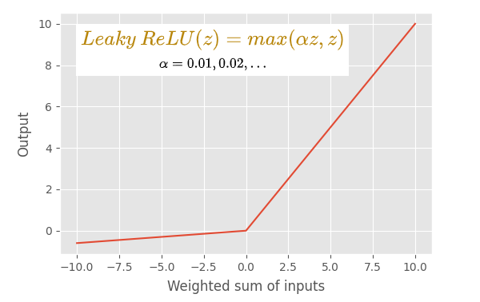
特点
- leaky ReLU 激活函数是默认 ReLU 函数的修改版本。
- 与 ReLU 激活函数一样，该函数不存在梯度消失问题。
- 如果输入值是 0 大于 0，leaky ReLU 函数会像默认的 ReLU 函数一样输出输入。 但是如果输入小于 0，leaky ReLU 函数会输出一个由 αz 定义的小负值（其中 α 是一个小的常数值，通常为 0.01，z 是输入值）。
- 它没有任何具有零导数（斜率）的线性分量。 因此它可以避免dying ReLU 问题。
- 使用leaky ReLU 的学习过程比默认的 ReLU 更快。
用法
同ReLU
3.5 PReLU
特点
- 这是 ReLU 函数的另一个变体。
- 类似于leaky ReLU 函数，区别是值 α 成为可学习的参数（因此得名）。 我们将 α 设置为网络中每个神经元的参数。 因此，α的最优值从网络中学习。
3.6 ReLU6
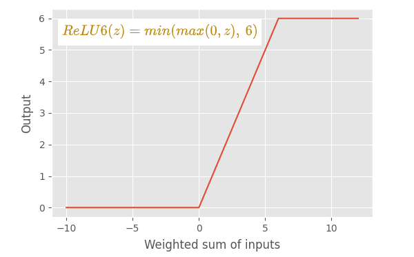
特点
- ReLU 和 ReLU6 之间的主要区别在于，ReLU 允许正侧的值非常高，而 ReLU6 限制为正侧的值 6。 任何 6 或大于 6 的输入值都将被限制为值 6（因此得名）。
- ReLU6 函数由三个线性分量组成。 它是一个非线性函数。
3.7 Softmax
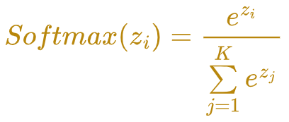
特点
- 这也是一个非线性激活函数。
- softmax 函数计算一个事件（类）在 K 个不同事件（类）上的概率值。 它计算每个类别的概率值。 所有概率的总和为 1，这意味着所有事件（类）都是互斥的。
用法
- 必须在多类分类问题的输出层使用 softmax 函数。
- 不在隐藏层中使用 softmax 函数。
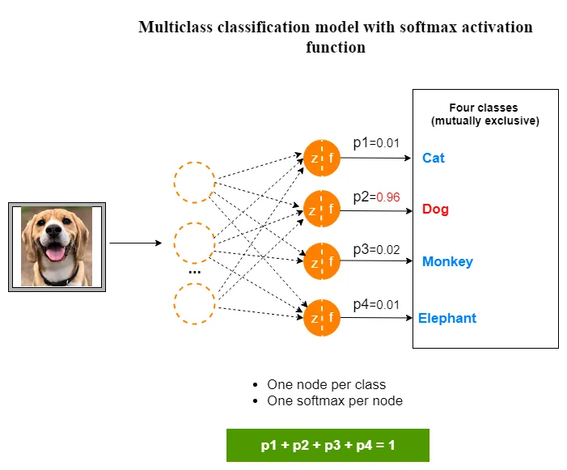
注意与多类sigmoid区分开
3.8 恒等激活函数
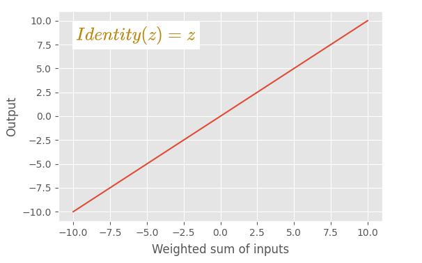
特点
- 唯一一个线性激活函数。
- 这个函数按原样输出输入值。对输入不做任何更改。
用法
- 该函数仅用于解决回归问题的神经网络模型的输出层。
- 不要在隐藏层中使用这个函数。
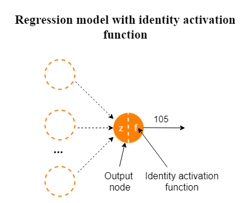
3.9 Swish
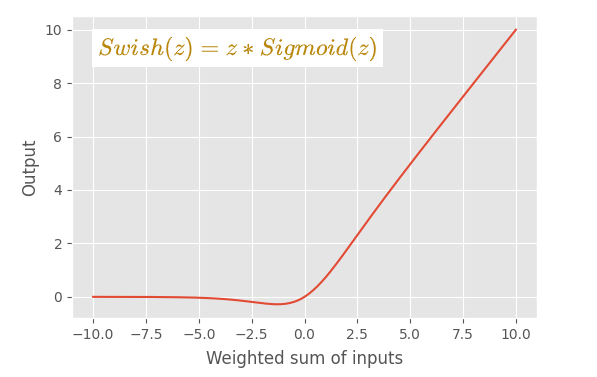
特点
- 该函数是通过将 sigmoid 函数乘以输入 z 构成的。 这是一个非线性函数。
- 该图与 ReLU 激活函数的图非常相似。
- 曲线比 ReLU 激活函数更平滑。 在训练模型时，这种平滑度很重要。 该函数在训练时很容易收敛。
用法
- 仅在隐藏层中使用。
- 不在神经网络模型的输出层使用这个函数。
缺点
- Swish 函数的主要缺点是计算量很大，因为函数中包含了 e^z 项。 这可以通过使用下面定义的称为“Hard Swish”的特殊函数来避免。
3.10 Hard Swish
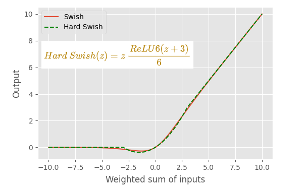
特点
- 与 Swish 函数的曲线基本相同。这在计算上很便宜，因为 sigmoid 函数被线性模拟取代。
用法
同Swish
4 总结
激活函数只是数学函数。激活函数应该具有的主要特征是该函数是可微的，因为这是模型中反向传播的要求。
选择正确的激活函数可以被认为是一种超参数调整，通过理解问题定义并考虑模型的性能和损失函数的收敛性来手动选择激活函数。 这里总结了上面讨论的不同激活函数的使用场景。当训练神经网络模型时，可以作为参考：
神经网络的输入层节点不需要激活函数，在定义输入层时无需担心激活函数。
输出层激活函数取决于我们要解决的问题类型。在回归问题中，我们使用线性（恒等）激活函数。在二元分类器中，我们使用 sigmoid 激活函数。在多类分类问题中，我们使用 softmax 激活函数。在多标签分类问题中，我们使用 sigmoid 激活函数，为每个类输出一个概率值。
隐藏层中使用非线性激活函数，通过考虑模型的性能或损失函数的收敛性来做出选择。可以从 ReLU 激活函数开始，如果你有一个Dying ReLU 问题，试试leaky ReLU。
在 MLP 和 CNN 神经网络模型中，ReLU 是隐藏层的默认激活函数。
在 RNN 神经网络模型中，我们对隐藏层使用 sigmoid 或 tanh 函数。 tanh 函数具有更好的性能。
只有恒等激活函数被认为是线性的。所有其他激活函数都是非线性的。
不要在隐藏层中使用 softmax 和恒等函数，在隐藏层中使用 tanh、ReLU、ReLU 的变体、swish 和 hard swish 函数。
hard swish是最新的研究结果，可以试试